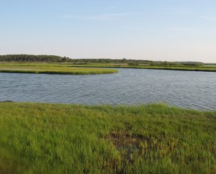

Environmental Specialties
Our region is defined by the natural beauty, abundance and culture of the Chesapeake Bay and its watershed. However, the human impact on this most treasured of our natural sources has been profound. Vista Design works closely with the real estate industry, agricultural interests, environmentalists, landowners and government to promote sound land use practices that will protect and restore watershed resources, water quality and forested areas. This goal is accomplished by utilizing the most up-to-date "green" technologies in the development of innovative and cost-effective methods to control erosion and sedimentation, reduce nutrient loads, and restore, enhance and preserve wetlands, woodlands and other habitats for plants and wildlife.
Moreover, Vista Design can guide our clients through the complexities of environmental policies due to our intimate knowledge of federal, state and local regulations, including, but not limited to, the Chesapeake & Atlantic Coastal Bays Critical Area Protection Program, National Pollutant Discharge Elimination System (NPDES), MDE-compliant Environmental Site Design (ESD) requirements, Maryland's Stormwater Design Manual, and the protocols of the various Soil Conservation Districts across the region.
Together we can achieve meaningful progress toward our shared goal of saving the Chesapeake and coastal bays.
|
 |